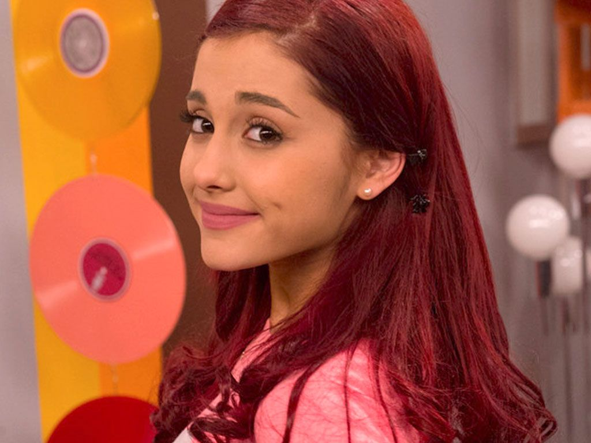

Ariana Grande-Butera (Boca Raton, 26 de junho de 1993), conhecida profissionalmente como Ariana Grande, é uma cantora, compositora, instrumentista, produtora musical, dançarina, atriz, dubladora e apresentadora norte-americana.
Se tornou a cantora mais ouvida da história da música em streaming, somando mais de 90 bilhões de reproduções globais e um dos nomes de maior relevância da música pop e do entretenimento, em geral, da atualidade. Iniciou sua carreira como atriz na TV, em Victorious, ao lado de Victoria Justice, em oito anos de carreira solo, ela venceu dois Grammy Awards em um total de quinze indicações.
Ariana fez sua estreia em 2008, atuando como Charlotte em 13 na Broadway. Entre 2010 e 2013, interpretou Cat Valentine na série Victorious, da Nickelodeon, e reprisou esse papel no spin-off Sam & Cat. Ela também atuou em outros papéis no teatro e na televisão e emprestou sua voz para programas de televisão, filmes animados e séries
Sua carreira musical começou com a trilha sonora da série Victorious. Desde então, Grande lançou seis álbuns:
Além disso, Grande alcançou treze vezes o top 5 da parada americana Billboard Hot 100, nomeadamente com suas canções "Problem", "Break Free", "Bang Bang", "Side to Side", "No Tears Left to Cry", "Break Up with Your Girlfriend, I'm Bored", "34+35", além de "Thank U Next" e "7 Rings", duas que chegaram ao topo da lista. A primeira com sete semanas não consecutivas e a segunda estreando como a terceira música feminina mais ouvida em sua primeira semana. Em 2020, também conquistou o topo com "Stuck with U" com Justin Bieber e "Rain on Me" com Lady Gaga. Voltou ao topo ainda em 2020 com a música "Positions", primeiro single do seu álbum de mesmo nome. Em 2021, Grande voltou a atingir o topo da parada com com "Save Your Tears (Remix)" com The Weeknd.